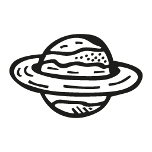
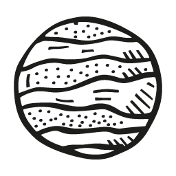
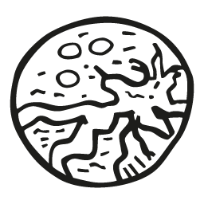
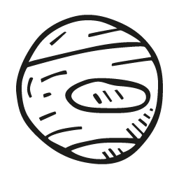

Unmove
CSS Animation Library
Spinner Animation
An infinite spin. Add the class um-spin to anything you want to spin
Crank up the speed. Add the class um-spin-fast to go twice as fast.
Ticker Animation
A horizontal news ticker scrolling animation. Add the class um-news-wrap to a div. This will go around the news ticker area and sets overflow to hiddent.
Add the class um-news-tick to a div within um-news-wrap.
Then add the class um-news-item to each item you want to be in the news ticker.




If you don't want the scrolling to stop when you hover over an item, add no-hover. And add reverse to have it scroll from left to right: um-news-tick-reverse-no-hover